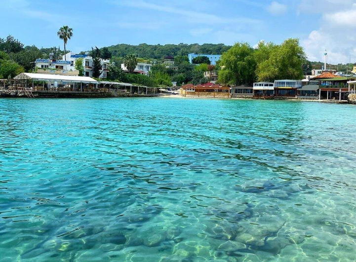
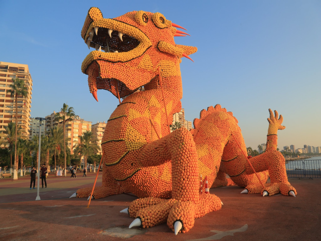

Top three activities to do at Mersin


Your guide
1. Visit the Mersin Marina: The Mersin Marina is a popular destination for both locals and tourists. It offers stunning views of the Mediterranean Sea, as well as a variety of restaurants, cafes, and shops. You can take a leisurely stroll along the marina, enjoy a delicious meal with a sea view, or even rent a boat to explore the coastline.
Akın İnceler